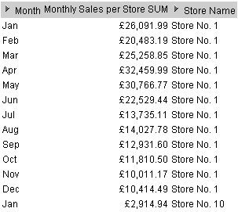
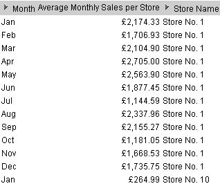
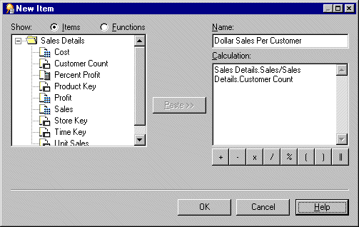
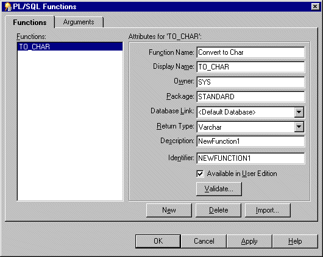
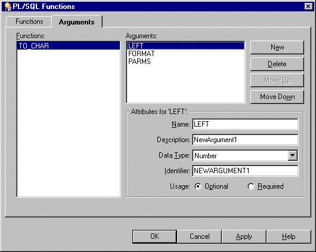

10g (9.0.4)
Part Number B10270-01
Library |
Contents |
Index |
| Oracle Discoverer Administrator Administration Guide (Online Help) 10g (9.0.4) Part Number B10270-01 |
|
This chapter explains how to create and maintain calculated items using Discoverer Administrator, and contains the following topics:
Calculated items are items that use a formula to derive data for the item.
Calculated items enable Discoverer end users to apply business calculations to the data. For example, typical business calculations might include:
Calculated items (like other items in a folder) can be used in conditions, summary folders, lists of values, joins, and other calculated items.
As the Discoverer manager, you can create calculated items and make them available for inclusion in workbooks.
Creating calculated items provides the following benefits:
You create calculated items using expressions that can contain:
There are three types of calculated items:
You can obtain more information about calculated items in Discoverer from the following sources:
Derived items are expressions used in calculated items that behave like any other item in a folder. Derived items can be axis items or data points and can be used anywhere that you would use an ordinary item. The value of a derived item remains the same regardless of which other items are included in a workbook.
The following are examples of derived items:
Sal*12+NVL(Comm,0) - returns annual salary plus commission
Initcap(Ename) - capitalizes the first letter of Ename
1 - returns the value 1
Sysdate-7 - returns today's date minus seven days
Aggregate calculated items are derived items (for more information, see "What are derived items?"), to which the GROUP function is applied (e.g. SUM, COUNT, MAX, MIN, AVG, DETAIL). The value of an aggregated calculated item depends on which other items are included in a worksheet.
The following are examples of aggregate calculated items:
SUM(Sal)*12 - returns the sum of the annual salary
SUM(Comm)/SUM(Sal) - returns the sum of commision divided by the sum of the salary
AVG(Monthly Sales) - returns the average monthly sales
How the axis items are grouped together affects the number of rows that are aggregated. This is particularly important in the case of calculations that are ratios of two aggregates.
For example, to calculate a margin, you would use the calculation SUM(Profit)/SUM(Sales) rather than Profit/Sales. Used in a query, the latter would result in SUM(Profit/Sales), which produces a different result from SUM(Profit)/SUM(Sales). The example uses the SUM aggregate, but the same can be applied for any of the other aggregates (e.g. SUM, COUNT, MAX, MIN, AVG, DETAIL).
Note: If you want to compute the sum of a ratio of two data points, always sum the data points before computing the ratio.
When creating aggregate calculated items, note that a number of restrictions apply. Aggregate calculated items:
Aggregate calculated items do not influence the number of rows of data referenced by the folder they are in. They only influence the generated SQL when selected in worksheets.
Analytic functions are advanced mathematical and statistical calculations that you can use to analyse business intelligence data. For example, to answer questions such as:
Analytic functions behave differently from aggregate calculated items as follows:
For more information about:
Aggregate derived items are aggregate calculated items in a complex folder that aggregate another aggregate calculated item (in the same complex folder). In other words, an aggregate derived item is simply an aggregate calculated item nested inside another aggregate calculated item.
Aggregate derived items enable you to apply an aggregation (e.g. AVG, SUM, COUNT) to the current level of aggregation to derive additional information.
Aggregate derived items behave in all respects like ordinary derived items. For more information, see:
This example explains how you can use an aggregate derived item to display the average monthly sales per store over one year, for a video stores chain. The aggregate derived item in this example uses an aggregate calculated item created in the same folder. For more information about aggregate calculated items, see "What are aggregate calculated items?".
This example uses two complex folders, Video Analysis and Monthly Sales Analysis, that are created when you complete the Discoverer Administrator Tutorial exercises (for more information, see the Discoverer Administrator Tutorial).
An aggregate derived item is created in the complex folder Monthly Sales Analysis. The Monthly Sales Analysis complex folder is built by dragging the following items from the Video Analysis complex folder (for more information, see the Discoverer Administrator Tutorial):
The complex folder Monthly Sales Analysis references a row of data for every store, for every month.
An aggregate calculated item (Monthly Sales Per Store) is created in the Monthly Sales Analysis complex folder using the following formula:
This item shows the total sales for a given store in a given month.

An aggregate derived calculated item (called Average Monthly Sales per Store), is created in the Monthly Sales Analysis complex folder using the following formula:
This item shows the average total sales for a given store in a given month.

You can create calculated items, derived items, aggregate calculated items and aggregate derived items using this task.
To create a new calculated item:
This dialog enables you to create a new calculated item and add it to the selected folder.
Note: If you did not select a folder, Discoverer Administrator displays the "New Item dialog" where you can select a folder to contain your new calculation (you can select any folder from any open business area).

If you are familiar with calculation syntax, you type the formula in the Calculation field.
Note: If you type a formula in the Calculation field, you must prefix the formula with an equals sign (i.e. =).
If you prefer, you can build the calculation in stages using any of the following methods:
Hint: Before pasting items in the Calculation field, position the cursor in the Calculation field to where you want to insert the item.
Note: Calculations follow the standard Oracle calculation syntax. For a full description of this syntax, see the Oracle SQL Language Reference Manual.
Note: Registered custom PL/SQL functions are displayed in the Database group. For more information, see "What are custom PL/SQL functions?"
If there are no errors in the Calculation field, the new item is created. If there are errors in the Calculation field, Discoverer Administrator displays the first error and returns you to the New Item dialog so that you can correct the details.
You can now use the new calculated item to create joins or conditions, even new calculations. You can also include the new calculated item in other calculated items.
To edit calculated item properties see Chapter 8, "How to edit item properties" for more information.
To edit an existing calculation:
For example:
You can delete one or more calculated items. Note that when you delete a calculated item, other EUL objects might be affected if they use the calculated item you want to delete. The Impact dialog enables you to review the other objects that might be affected when you delete a calculated item.
To delete a calculated item:
You can select more than one item at a time by holding down the Ctrl key and clicking another item.

The Impact dialog enables you to review the other EUL objects that might be affected when you delete an item.
Note: The Impact dialog does not show the impact on workbooks saved to the file system (i.e. in .dis files).
You might want to create a worksheet that end users can drill out from, to display additional or related information in another worksheet in Discoverer Viewer.
You can create a calculated item in Discoverer Administrator that includes an internet address (a URL), and include the same item in a worksheet. End users can click the item to display a pre-defined Discoverer Viewer worksheet.
To create a calculated item that enables end users to drill out from one worksheet (the source) to display another worksheet (the target) in Discoverer Viewer:
This is the pre-defined worksheet that end users will drill out to, from the source worksheet.
For more information about creating worksheets, see the Oracle Application Server Discoverer Plus User's Guide.
Note: If you want the target worksheet to display context-sensitive information (i.e. information related to the source worksheet row or column that end users drill out from), the target worksheet must use a method of filtering the data (e.g. parameters or page items).
You will paste the URL of the target worksheet into a new calculated item in Discoverer Administrator, and then modify the formula of the calculated item.
You will use the new calculated item in the source worksheet to drill out to the target worksheet in Discoverer Viewer.
You must now edit the URL in the new calculated item and replace each parameter value with its corresponding EUL item name. The EUL items supply the dynamic value that are used by the parameters in the target worksheet.
For example:
'http://mymachine.com/discoverer/viewer?&cn=cf_a208&pg=1&wbk=PARAMETERS&wsk=26&qp_myRegion=CENTRAL'
Using single quotation marks enables Discoverer to treat the text of an URL correctly.
For example, if the target worksheet uses a parameter named myRegion (that represents the EUL item Region), the URL that you paste into the Calculation field might appear as follows:
'http://mymachine.com/discoverer/viewer?&cn=cf_a208&pg=1&wbk=PARAMETERS&wsk=26&qp_myRegion=CENTRAL'
To replace part of the URL with a value determined from an EUL item, use the syntax '||<ItemName>||'. For example, in the URL above you might replace the value CENTRAL as follows:
'http://mymachine.com/discoverer/viewer?&cn=cf_a208&pg=1&wbk=PARAMETERS&wsk=26&qp_myRegion='||Region||''
Where Region is the corresponding EUL item that dynamically supplies the value required by the myRegion parameter in the target worksheet.
Note: You use single quotation marks and the || operator to correctly build the resulting URL.
For example, you could name the new calculated item Drill_to_myRegion.
Discoverer displays the "Item Properties dialog" for the calculated item you just created.
The Content Type attribute tells Discoverer to launch another application. In this case, Discoverer Plus, Discoverer Desktop or Discoverer Viewer will launch a Web browser to display the target worksheet in Discoverer Viewer.
For more information about creating worksheets, see the Oracle Application Server Discoverer Plus User's Guide.
When an end user displays this source worksheet in Discoverer Plus, Discoverer Desktop or Discoverer Viewer, they can click the Drill_to_myRegion calculated item (that you just created) to display the target worksheet in Discoverer Viewer. The context-sensitive value for the EUL item Region is dynamically passed to the target worksheet using the myRegion parameter to display the correct results data.
The example URL used in this task can be broken down into the following components:
PL/SQL functions are one of Oracle's procedural extensions to SQL. PL/SQL functions offer access through PL/SQL references in the SQL, to PL/SQL functions that run in the Oracle server. PL/SQL functions enable you to compute values in the database. For more information about PL/SQL functions, see the PL/SQL User's Guide and Reference.
Custom PL/SQL functions are PL/SQL functions created by the Discoverer manager that are designed to meet additional Discoverer end user requirements (e.g. to provide a complicated calculation). Custom PL/SQL functions supplement the PL/SQL functions provided by Oracle and are available to all database processes.
You create custom PL/SQL functions using SQL*Plus, or a procedural editor. You do not create custom PL/SQL functions directly in Discoverer Administrator. For more information see the SQL*Plus User's Guide and Reference.
Note: In Discoverer Plus, folders containing derived items (for more information, see "What are derived items?") that use PL/SQL functions will be visible only to users who have EXECUTE database privileges on those functions.
To access custom PL/SQL functions using Discoverer, you must register the functions in the EUL. When you have registered a custom PL/SQL function, it appears in the list of database functions in the "Edit Calculation dialog" and can be used in the same way as the standard Oracle functions.
You can register custom PL/SQL functions in two ways:
We recommend you register PL/SQL functions by importing automatically (especially if you have many functions to register), because it is easy to make mistakes when manually entering information about functions. When you import functions, all of the information about each function (e.g. names, database links, return types, lists of arguments) is imported. Importing ensures correct information about the function, because the information does not have to be manually entered on a function-by-function basis.
Manual registration requires that you register each function individually by supplying all of the information about the function.
To register PL/SQL functions automatically you must import them in the following way:
This dialog enables you to select the PL/SQL functions that you want to import.
You can select more than one function at a time by holding down the Ctrl key and clicking another function.
Information about the selected functions is imported automatically. In other words, you do not have to manually enter information or validate the information.
To manually register a PL/SQL function for use in Discoverer:


The custom PL/SQL function is now registered for use in Discoverer.
|
|
 Copyright © 2003 Oracle Corporation. All Rights Reserved. |
|